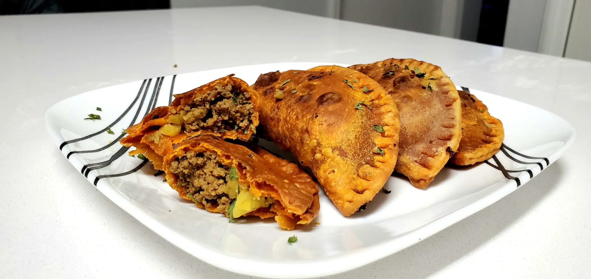

Empanadilla

Ingredients
- 1 pound of lean ground beef
- 1/3 cup of homemade sofrito
- 1/3 cup of tomato sauce
- 1 packet of sazon con achiote
- 1 tablespoon of adobo all purpose seasoning
- 2 teaspoons of ground cumin
- 1 teaspoon of dried oregano
- 1 teaspoon of red pepper flakes
- 2 1/2 cups of small diced potatoes (frozen potatoes work too)
- 1 package of Goya Brand- Empanada Discos con Achiote
Steps
- Defrost frozen empanada dough for 2-3 hours.
- On medium heat cook homemade sofrito with tomato sauce until fragrant. Then add lean ground beef.
- Crumble the meat and season with sazon, adobo, cumin, dried oregano and red pepper flakes.
- Once meat is brown add diced potatoes and allow remaining liquid to steam potatoes until tender. Cool your mixture.
- On a flat surface, sprinkle some all purpose flour and lay out your empanada dough.
- Add a tablespoon of the meat mixture in the center of the dough. Fold over the dough and firmly press with your thumbs. To properly seal the seam, crimp the edges with a fork.
- In hot oil, fry the empanadas for 1 minute on each side. Let them rest on a paper-towel and enjoy!